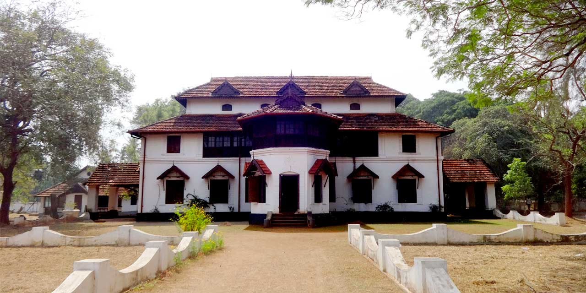

KOLLENGODE PALACE
The Raja of Kollengode, Vasudeva Raja, constructed this palace in 1904 and gave it to his daughter. The original Kollengode palace(kalari kovilakam) is situated in Kollengode, Palakkad. In 1975, the Department of Archeology acquired the property (part of Kollengode palace in Thrissur )and converted it into a museum

PALAKKAD FORT
Palakkad Fort is an old fort situated in the heart of Palakkad town of Kerala state, southern India. It was recaptured and rebuilt grandly by Sultan Hyder Ali in 1766 ACE and remains one of the best preserved forts in Kerala.

SILENT VALLEY NATIONAL PARK
Silent Valley National Park, is a national park in Kerala, India. It is located in the Nilgiri hills, has a core area of 89.52 km², which is surrounded by a buffer zone of 148 km². This national park has some rare species of flora and fauna. This area was explored in 1847 by the botanist Robert Wight